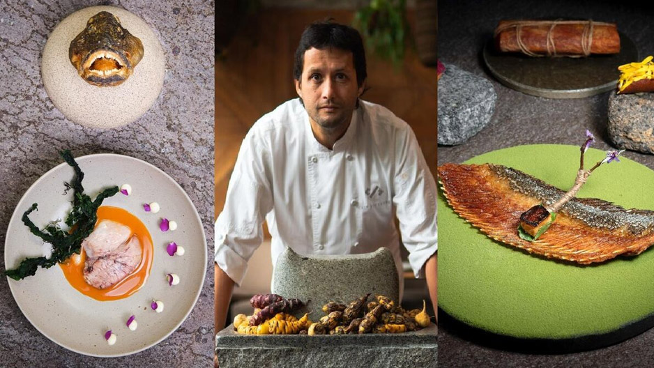

Chef: Mitsuharu Tsumura ('Micha') Global Rank: #1 in the World (2025).
This spot represents the pinnacle of Nikkei cuisine (Japanese-Peruvian fusion). It serves a masterful dialogue between two cultures, featuring Amazonian ingredients and Japanese techniques.
Signature Tasting Menu - Avg Price: $150
Central
Chefs: Virgilio Martínez & Pía León Global Rank: Best of the Best (Hall of Fame).
Central is an exploration of Peru's diverse ecosystems. They serve dishes organized by altitude, taking you on a journey from below sea level to the high Andes.
Chef: Pía León Global Rank: #9 in the World (2025).
Located right next to Central, Kjolle offers a colorful and open-minded look at Peruvian ingredients. It is free from the constraints of a specific menu structure, focusing on seasonal products.
Chef: Juan Luis Martínez Global Rank: #26 in the World (2025).
A small, stylish spot in the Barranco district. It mixes Venezuelan roots with Peruvian pantry staples in an innovative way, creating a unique fusion that feels both modern and comforting.
Chef: Jaime Pesaque Global Rank: #39 in the World (2025).
"Mayta" means "Noble Land" in Aymara. The restaurant focuses on traceability and sustainable ingredients, presenting refined versions of traditional Peruvian flavors and spirits.

Chef Jaime Pesaque showcasing sustainable menu - Avg Price: $110